- Add the IMU to the robot
- Start running the Artemis and sensors from a battery
- Record a stunt with the RC robot
Objectives
Lab 2 Tasks
- Setup the IMU
- Accelerometer
- Gyroscope
- Sample Data
- RC Robot Stunt
Setup the IMU
I installed the SparkFun 9DOF IMU Breakout_ICM 20948_Arduino Library from the Library Manager of the arduino IDE and
connected the IMU to the Artemis via the QWIIC connectors. Afterwards, I ran the Example1_Basics from that library.
- In that file there was the following definition: AD0_VAL, which, as noted on the file, is the value of the last bit of the I2C address.
- Its value should be 1. The only scenario in which it should be 0, is when the ADR jumper is soldered (or connected in another way) closed. This would allow us to have mupltiple IMUs. Because our ADR jumper is open, our AD0_val should have the default value of 1.
Based on the outputs of the following videos, we can see that the IMU works properly in terms of its accelerometer and gyroscope. For both sensors, there are 3 outputs, one for each axis (X,Y,Z). The accelerometer outputs mg, thousands of Earth gravity, while the gyroscope outputs DPS, which is Degrees Per Second, a.k.a. Angular Velocity.
Video 1: IMU serial plotter output
Video 2: IMU serial print output
Start-up indication:
In order to know that the board is running, I made it so that the Artemis' LED blinks thrice on start-up. This is showcased in the following video:
Video 3: LED blink start-up indication
Accelerometer
In order to convert the accelerometer data into pitch and roll, I used the following equations presented in class:
pitch = θ = atan2(a_x, a_z) * 180 / π
roll = φ = atan2(a_y, a_z) * 180 / π
roll = φ = atan2(a_y, a_z) * 180 / π
The multiplication by 180 and division by pi, is simply to convert radians into degrees.
The following video showcases the output of the accelerometer for pitch and roll in degrees:
Video 4: Accelerometer Pitch and Roll output in degrees
Based on the previous videos, and other testing conducted during the lab, I concluded that the accelerometer is accurate enough, to the point where a two-point callibration is not necessary. After all, it is known that our robot cars will not have extremely accurate sensor readings in general.
Frequency Spectrum Data Analysis:
The artemis code for data collection and sharing with the computer is the following:
case GET_ACC_DATA:
float accelMicros;
float theta; //pitch
float phi; //roll
accelMicros = 0;
theta = 0; //pitch
phi = 0; //roll
if (!success) {return;}
// Collection of 2500 data points
for (int i = 0; i < 2500; i++) {
while (!myICM.dataReady()) {}
myICM.getAGMT();
accelMicros = micros();
theta = atan2(myICM.accX(), myICM.accZ()) * 180 / M_PI;
phi = atan2(myICM.accY(), myICM.accZ()) * 180 / M_PI;
timestamps[i] = accelMicros;
thetas[i] = theta;
phis[i] = phi;
}
// send one message to computer for each index of the data arrays
for (int j = 0; j < 2500; j++) {
tx_estring_value.clear();
tx_estring_value.append("T:");
tx_estring_value.append(timestamps[j]);
tx_estring_value.append(",");
tx_estring_value.append("P:");
tx_estring_value.append(thetas[j]);
tx_estring_value.append(",");
tx_estring_value.append("R:");
tx_estring_value.append(phis[j]);
tx_characteristic_string.writeValue(tx_estring_value.c_str());
}
break;
The previous code sends 2500 data points to the computer where each data point contains Time, Pitch and Roll. Then, the computer receives it through the following python handler function which also saves it to the computer as a CSV file.
def accelerometer_handler(uuid, byteArray):
string = ble.bytearray_to_string(byteArray).strip()
t, p, r = string.split(",")
time = float(t[2:])
pitch = float(p[2:])
roll = float(r[2:])
#print(f"{time_value},{pitch},{roll}\n")
with open("accelerometer_data.csv", "a+") as file:
file.seek(0)
if file.read(1) == "":
file.write("Time,Pitch,Roll\n")
file.write(f"{time},{pitch},{roll}\n")
The data isn't as noisy as I had expected. Our IMU has a "built-in" low pass filter. However, in the future, the IMU is going to be inside the robot's body right next to the motors. This, in addition to the fact that there are probably going to be other sources of noise, suggested I should implement a low-pass filter.
Examining my original data, I saw that the "real" data were under 5 Hz above which there was noise.
My total sampling time was 7020988 microseconds = 7.020988 seconds and I took 2500 samples. This means my Sampling Rate was 356Hz or Sampling Period of ~0.0028 s. For a low-pass filter with a cut-off frequency of 5 Hz, RC = 1/(2π5) = ~0.0318 s. From these, we can derive α = 0.0028/(0.0028+0.0318) = ~0.081
The following 4 plots are with me hitting the lab counter (a bit unsuccessfully I would add as I barely managed to make the IMU viberate). Note that the pitch in the Time Domain is negative because of how I had left the IMU to rest on the counter. You can see this in Video 3.
These plots show the unfiltered (raw) and filtered (with the 5Hz cutoff Low-pass filter) data, both in the time and frequency domain.
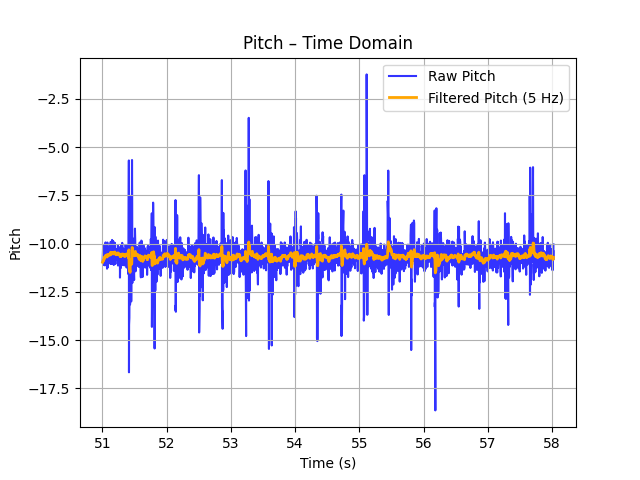
Figure 1: Pitch Time Domain
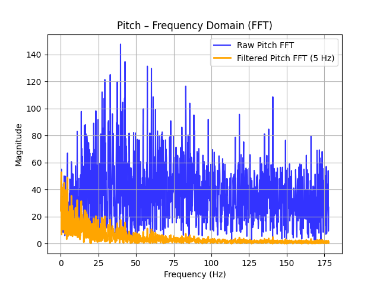
Figure 2: Pitch Frequency Domain
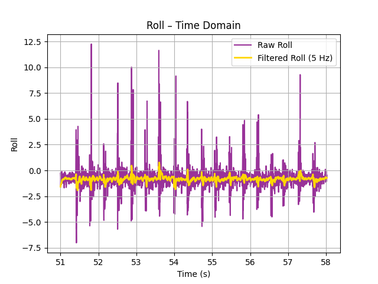
Figure 3: Roll Time Domain
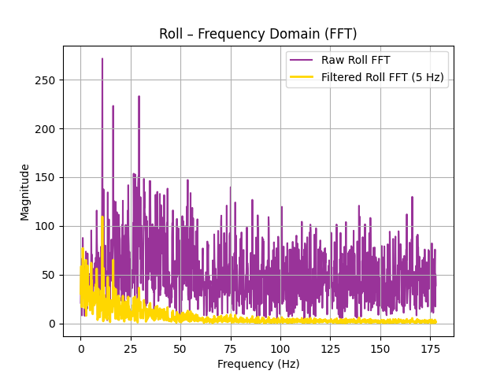
Figure 4: Roll Frequency Domain
The following figures is when I was moving the IMU with my hand:
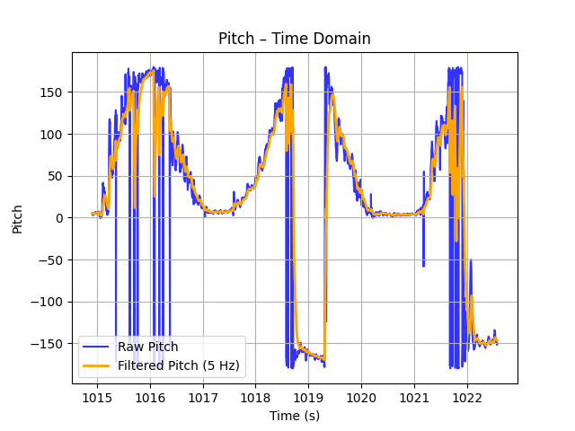
Figure 5: Pitch Time Domain while moving IMU
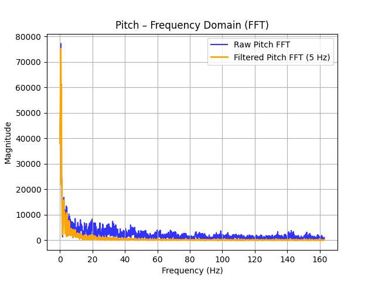
Figure 6: Pitch Frequency Domain while moving IMU
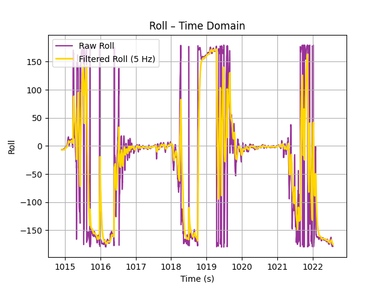
Figure 7: Roll Time Domain while moving IMU
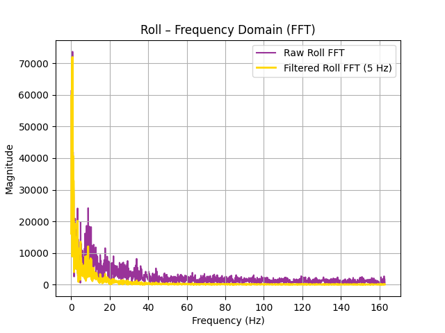
Figure 8: Roll Frequency Domain while moving IMU
Though there is still some noise present after implementing the low-pass filter, the output of the lp filter was vastly improved compared to the raw data.
Gyroscope
In order to convert the gyroscope data into pitch and roll, I used the following equations presented in class:
pitch = θ = θ + gyro_reading_Y * Δt
roll = φ = φ + gyro_reading_X * Δt
yaw = ψ = ψ + gyro_reading_Z * Δt
roll = φ = φ + gyro_reading_X * Δt
yaw = ψ = ψ + gyro_reading_Z * Δt
With these equations I got the following results:
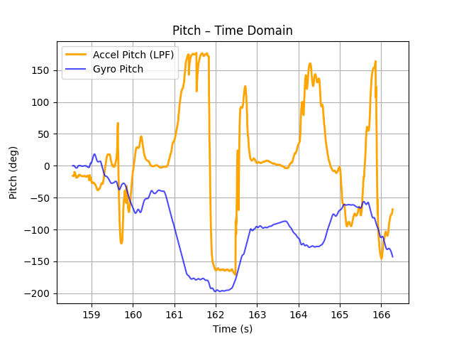
Figure 9: Pitch Time Domain
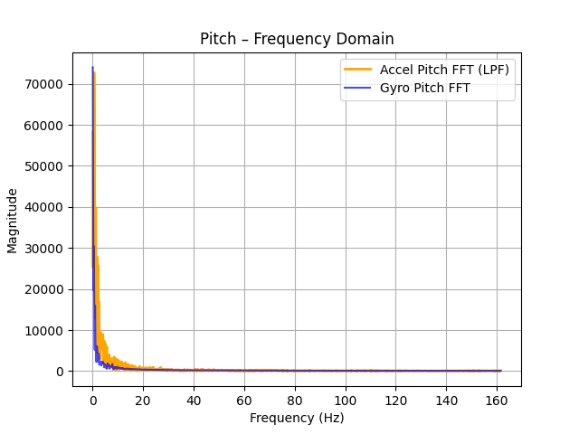
Figure 10: Pitch Frequency Domain
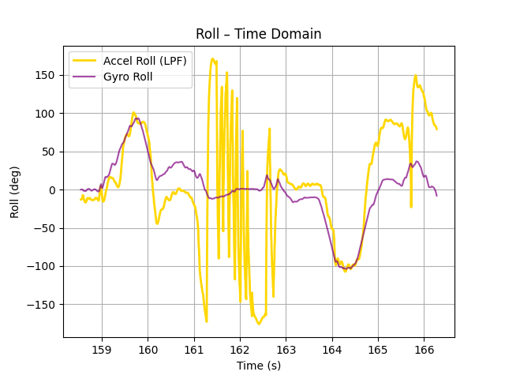
Figure 11: Roll Time Domain
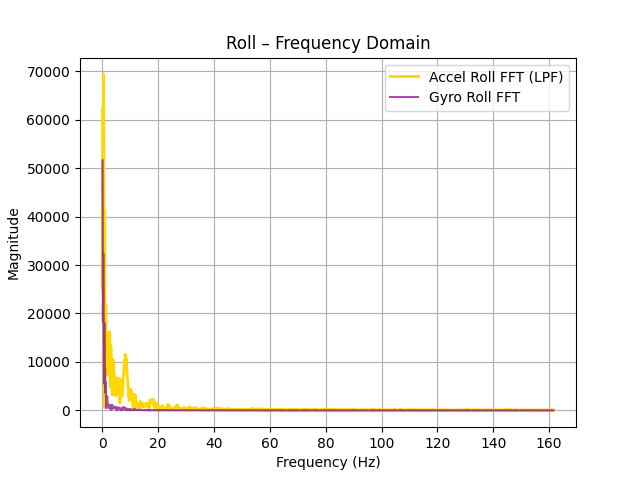
Figure 12: Roll Frequency Domain
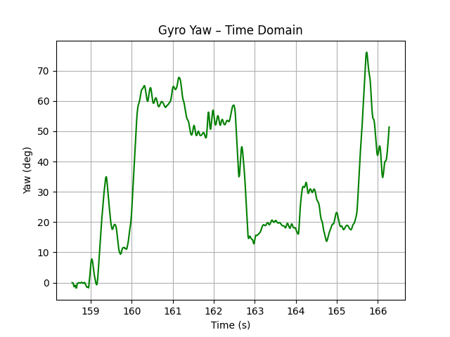
Figure 13: Yaw Time Domain
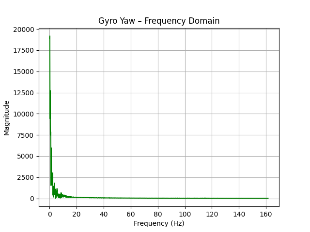
Figure 14: Yaw Frequency Domain
The pitch is negative compared to the accelerometer!
After making the change the results are the following:
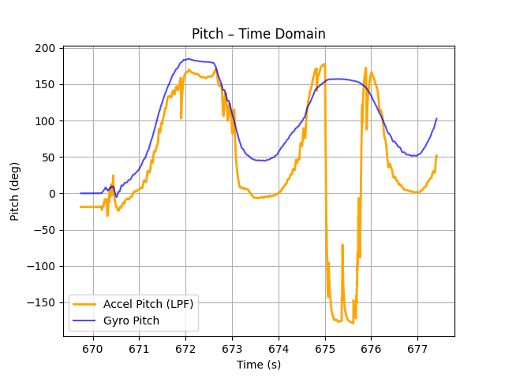
Figure 15: Pitch Time Domain (corrected)
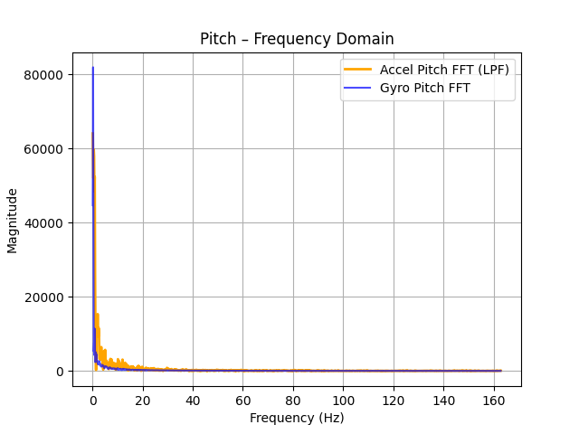
Figure 16: Pitch Frequency Domain (corrected)
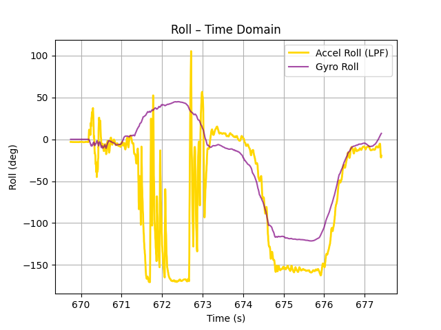
Figure 17: Roll Time Domain (corrected)
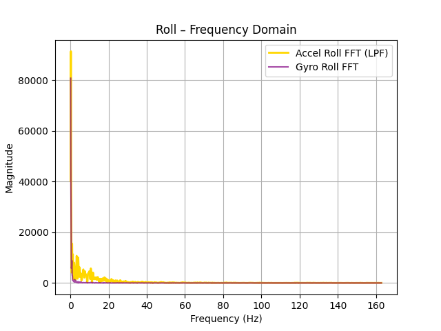
Figure 18: Roll Frequency Domain (corrected)
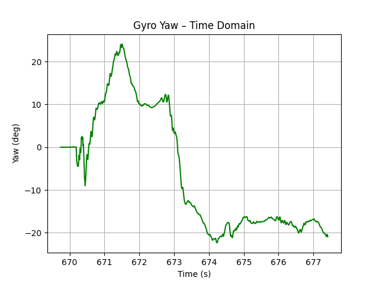
Figure 19: Yaw Time Domain (corrected)
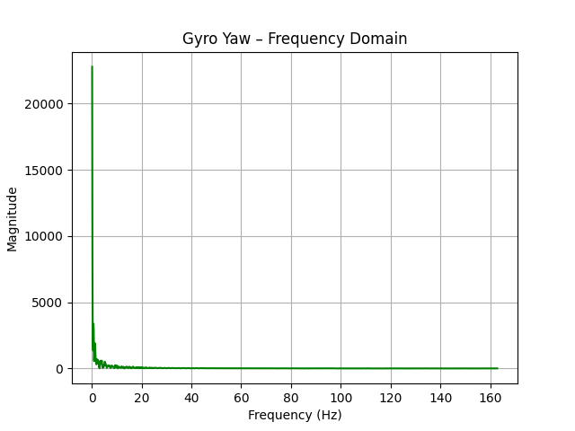
Figure 20: Yaw Frequency Domain (corrected)
The two following figures are without and with 4ms delay respectively. Our original sampling rate was ~2000 microseconds. 4 millisecond delay ==> 4000 microsecond delay ==> 6000 microseconds total sampling time ==> tripling the sampling time. The results from the following figures show that adding a delay has an effect on the amount of drift present. We can observe that for the same amount of time that has passed, more drift has been introduced:
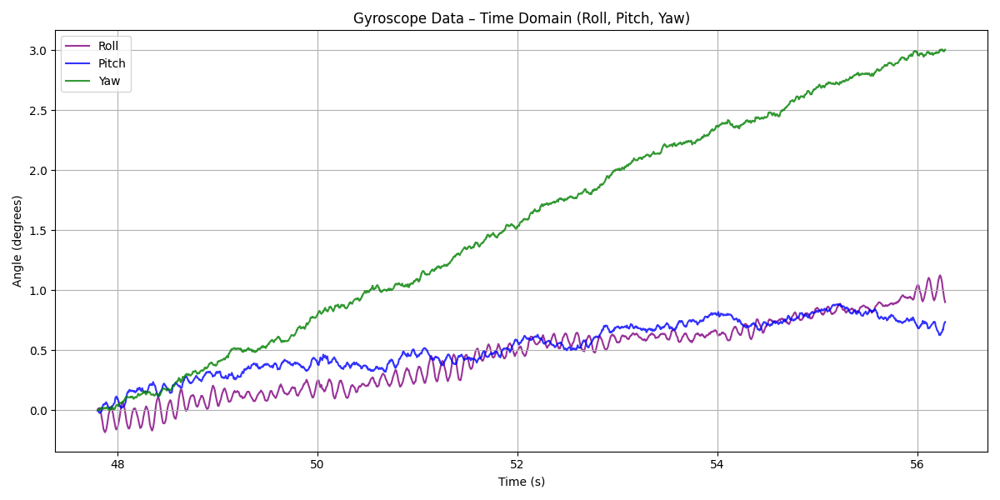
Figure 21: No delay
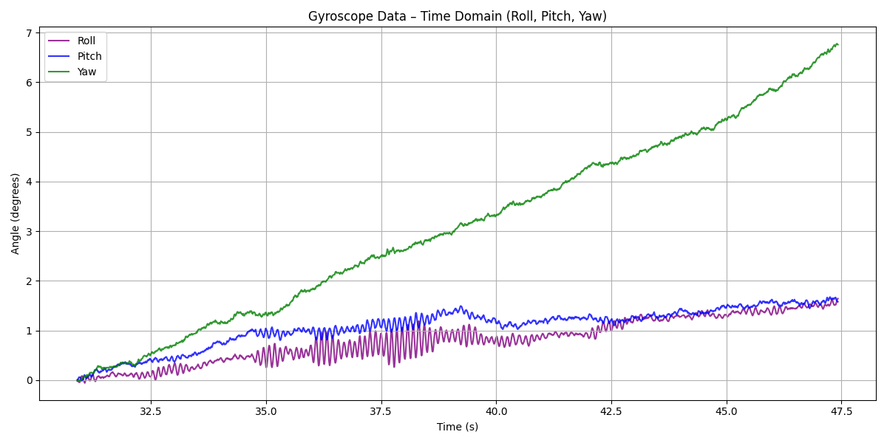
Figure 22: 4 ms delay
Complementary Filter:
Equations:
θ = (θ + θ_g)(1 − α) + θ_a*α
φ = (φ + φ_g)(1 − α) + φ_a*α
ψ = ψ_g
From the following plots with alpha=5% and alpha=10% respectively, we can see that the difference is miniscule but a=5% produces a slightly better result.
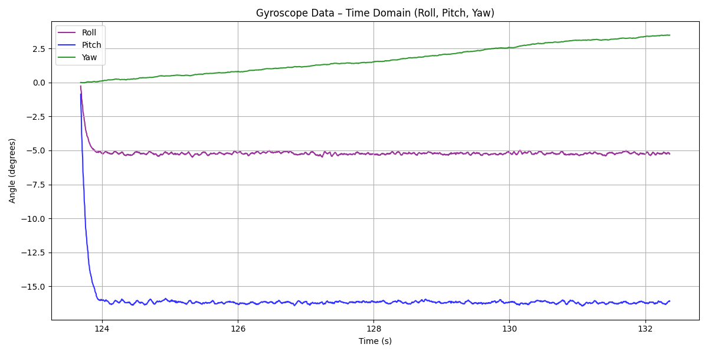
Figure 23: alpha = 5%
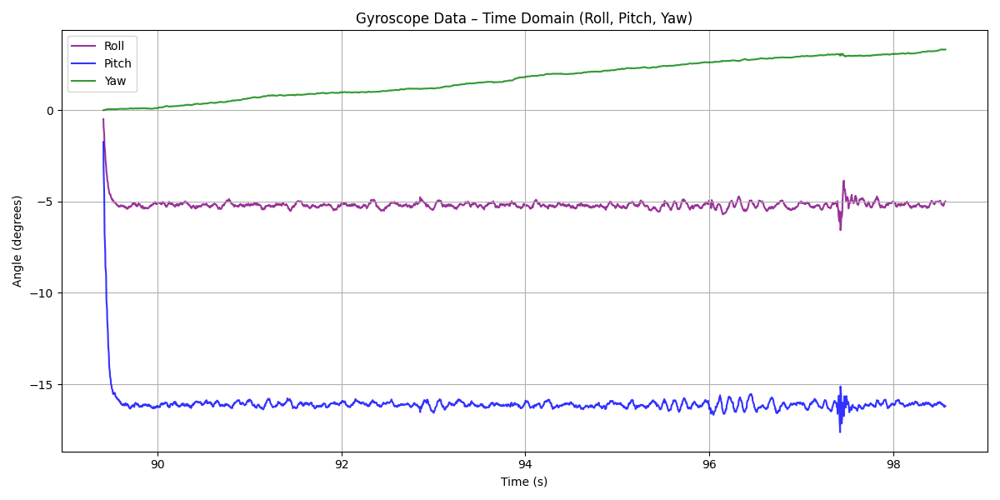
Figure 24: alpha = 10%
Finally, here we can see the range and accuracy of the complementary filter with a=5%. Note that I was holding it without keeping my hand stable which produced quick vibrations. We can also observe that the drift here is negligible.
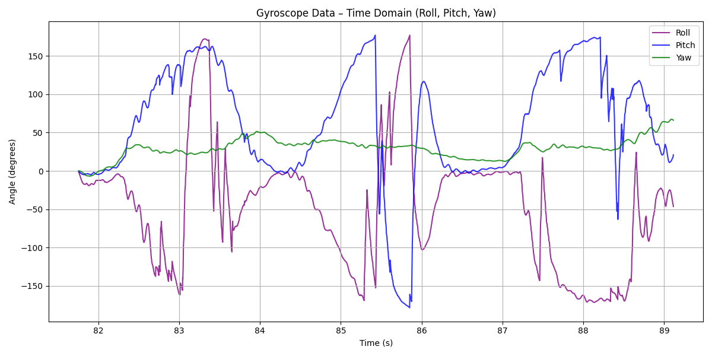
Figure 25: working range, accuracy lack of susceptibility to drift or quick vibrations
Sample Data
Sampling Data Points via the loop is slightly slower at 3554 microseconds per data point, while before, with the same complementary filter, it was 3470 microseconds. This is equivalent to ~281.4 measurements per second.
My loop is shown below and its logic is simple. If there are available data, increase the # of data points (while also sampling) and loop iterations.
If there are no available data, the data collection is skipped and only the loop iperations variable is incremented by one.
If there are no available data, the data collection is skipped and only the loop iperations variable is incremented by one.
void loop(){
// Listen for connections
BLEDevice central = BLE.central();
// If a central is connected to the peripheral
if (central) {
Serial.print("Connected to: ");
Serial.println(central.address());
// While central is connected
while (central.connected()) {
// Send data
write_data();
// Read data
read_data();
if( collecting_data && (data_points < 2500)){
loop_iterations++;
if(myICM.dataReady()){
myICM.getAGMT();
Now = micros();
dT = (Now - T0) / 1000000.0;
T0 = Now;
// Accelerometer angles
Acc_pitch = atan2(myICM.accX(), myICM.accZ()) * 180.0 / M_PI;
Acc_roll = atan2(myICM.accY(), myICM.accZ()) * 180.0 / M_PI;
float Gyro_increment_pitch = -myICM.gyrY() * dT; // minus needed
float Gyro_increment_roll = myICM.gyrX() * dT; // minus not needed
Comp_pitch = (1.0 - alphaCont) * (Comp_pitch + Gyro_increment_pitch) + alphaCont * Acc_pitch;
Comp_roll = (1.0 - alphaCont) * (Comp_roll + Gyro_increment_roll) + alphaCont * Acc_roll;
// Yaw: gyro only
Gyro_yaw += myICM.gyrZ() * dT;
timestamps[data_points] = Now;
pitchs[data_points] = Comp_pitch;
rolls[data_points] = Comp_roll;
yaws[data_points] = Gyro_yaw;
data_points++;
}}}
Serial.println("Disconnected");
}}
and these as my flag setter commands for the Artemis:
case START_COLLECTING_DATA:
data_points = 0;
loop_iterations =0;
T0=micros();
Gyro_yaw = 0;
collecting_data = true;
break;
case STOP_COLLECTING_DATA:
collecting_data = false;
for (int j = 0; j < data_points; j++) {
tx_estring_value.clear();
tx_estring_value.append("T:");
tx_estring_value.append(timestamps[j]);
tx_estring_value.append(",P:");
tx_estring_value.append(pitchs[j]);
tx_estring_value.append(",R:");
tx_estring_value.append(rolls[j]);
tx_estring_value.append(",Y:");
tx_estring_value.append(yaws[j]);
tx_characteristic_string.writeValue(tx_estring_value.c_str());
}
Serial.print("Completed Loop Iterations: ");
Serial.print(loop_iterations);
Serial.print(" and Collected Data Points: ");
Serial.println(data_points);
break;
After leaving the flag set to true and waiting for the maximum data points to get collected (2500), I sent the command to stop the data collection and the Artemis printed that the amount of loop iterations and data points sampled where the same at 2500.
This means that there were always available data when it was time to sample data points. As a conclusion, the main loop on the Artemis does NOT run faster than the IMU produces new values.
As far as the data storage is concerned, I kept my original idea where I had different arrays for each data type (pitch, roll, yaw) and different ones for each origin (accel, gyro). However, for the complementary filter I only saved the final . This makes it much easier to keep track of the different data points as they have the same index in the different arrays. It also allows me to be more flexible if I ever want to remove one of the arrays from sending to the computer or editting it.
For me, the best data type to store my data is float as it is only 4B. This means that for a Time, Pitch, Roll, Yaw data point, I need 16B.
Assuming 350kB free of the total of 384kB of memory (as we will never have the entire RAM free), we have 358,400B. Divided by 16B (size of one data point), we have a total of 22,400 measurements. Assuming a sampling rate of 281.4 measurements per second, we can sample ~ 79.6 seconds of data.
RC Robot Stunt
My car's name is Zeus. No, I did not name it myself. It is pronounced Zefs, just like Odyssefs.
After experiencing the car, I can tell it slips a lot, it is very unstable and it doesn't turn well. Also it can flip when stopping after going fast in a line. I believe the turning aspect will be much better after Zeus has successfully transisioned into a proper robot.
Video 5: RC Robot 1st Stunt
Video 6: RC Robot 2nd Stunt
Discussion
Lab 2 successfully integrated the IMU to the Artemis and utilized the accelerometer and gyroscope it has to collect and send data to the computer. The data acquisition is set up to send data points to the computer and ready for extension in subsequent labs.
What challenged me the most was the lack of time to do everything sufficiently.
I really like the way I have made the Artemis print the loop iterations and collected data points to see whether the loop runs faster than the IMU readies data.
Collaboration
I used Kimi to debug formatting for the website, chatGPT for the plots, and I referred to Lucca Correia's Website for how to structure this lab report. I also looked at Aidan McNay's website to see example plotting and document structure.